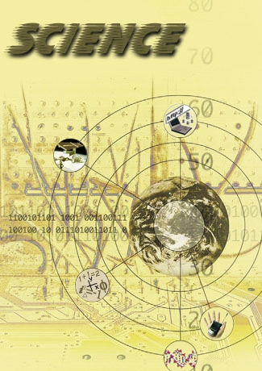

|  |
|
《科学》这幅图片的设计是以地球为中心， 因为人类是科学的主宰者，地球人用他们的智慧 和勇气去探索、去钻研，终于推动了科学向前发 展。用精密的大规模集成电路做背景是要表现： 现代社会是以电子计算机、原子能以及空间科学 技术的应用和发展为标志的信息时代。现代科学 正向着数字化的方向发展，而图片中交叉的数字 正是这种现象的反映。地球的周围是现阶段世界 上的前沿科学和尖端的科技成果，有计算机网络 技术、航空航天技术、信息通信技术、生物工程 技术和被称为科学的语言的数学。这些说明我们 的努力取得了一些成功。 |